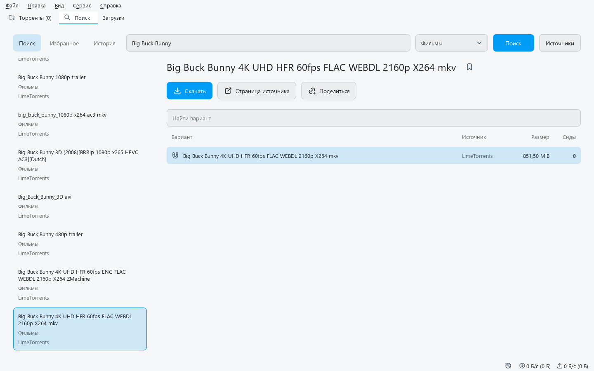

Выбор раздачи
Выбирайте язык, качество и нужное издание, смотрите размер и количество сидов. История сохраняет выбранную раздачу.
Сравнивайте варианты из разных источников и скачивайте выбранную раздачу. Видео открывается в qplay, книги и манга — во встроенной читалке.
Linux x64 / WSL (Ubuntu 24.04+, glibc 2.39+)
curl -fsSL https://qbutt-org.github.io/qbutt/install.sh | sh
Не удалось скопировать. Скопируйте выделенную команду вручную.

Выбирайте язык, качество и нужное издание, смотрите размер и количество сидов. История сохраняет выбранную раздачу.
Видео можно передать в qplay, в том числе начать просмотр торрентного файла до конца загрузки. Во встроенной читалке доступны главы и сохранение позиции.